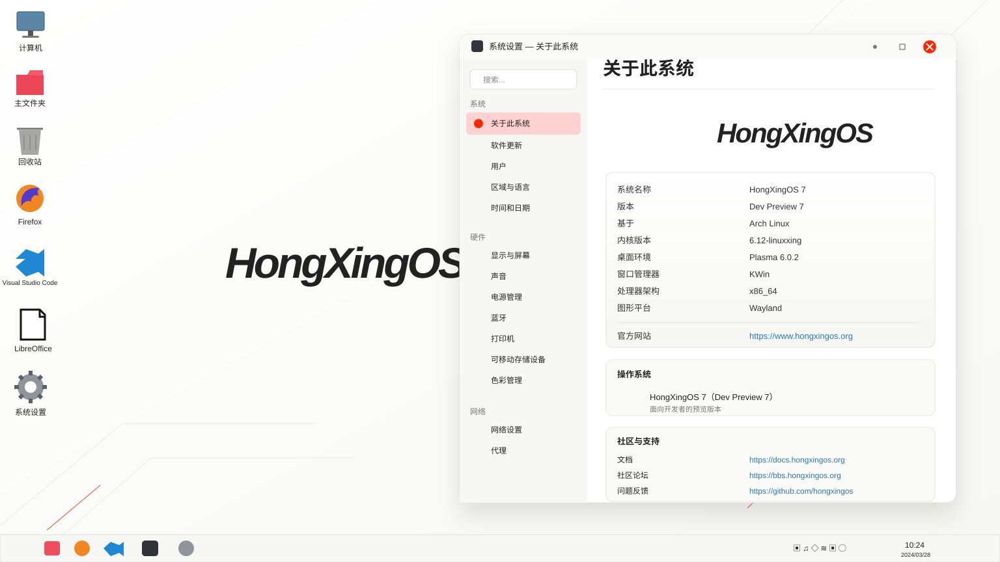

Arch Linux
当前开发预览以 Arch Linux 为基础，便于控制系统组件、软件包与开发阶段的快速迭代。


HongXingOS 7 当前处于 Dev Preview 阶段。现阶段版本用于验证系统框架、桌面环境、设备适配、图形栈以及 Hong Xing 服务体系之间的基础协同，不代表最终稳定版本的完整功能与最终界面。

以下信息对应当前 Dev Preview 7 开发预览环境。稳定版的组件版本、硬件支持范围和发布形式仍可能继续调整。
当前开发预览以 Arch Linux 为基础，便于控制系统组件、软件包与开发阶段的快速迭代。
当前 Dev Preview 7 显示的内核版本。早期 4 月规划曾以 6.1 方向作为内部测试基础，当前开发预览已继续推进。
当前开发环境使用 Plasma 桌面，并继续验证系统设置、桌面交互与应用适配。
KWin 负责当前开发预览中的窗口管理，与 Plasma 和 Wayland 图形链路共同测试。
当前使用 Wayland 图形平台，持续验证显示、输入、窗口行为与应用兼容。
当前公开开发预览以 x86_64 为主要测试架构。
HongXingOS 7 继续整理系统、Firmware、Online 与 AuthLit 之间的依赖关系，使系统层、连接层与认证安全层能够在同一维护体系中协同。
系统运行环境、桌面、设备适配、应用兼容、资源调度与版本生命周期。
SYSTEM启动流程、后台服务依赖、最小预加载、安全响应与软硬件兼容。
FIRMWARE在线服务初始化、连接状态检测、恢复及部分服务请求路径调度。
SERVICE身份认证、权限、终端、日志、异常响应、主动干预与远程管理。
SECURITYHongXingOS 7 的开发计划在 2026 年内经历过多次调整，因此页面不把任何单次计划写成最终发布日期。
当时计划于 2026 年 10 月启动首轮内部测试，早期内核规划基于 6.1 方向。
受重大事件及资源重新分配影响，OS7 曾暂停开发并推迟原定发布时间；该记录属于当时状态。
O3 公告重新确认 HongXingOS 7 集成计划，并计划将 O3 作为默认固件体系的一部分。
当前已进入 Dev Preview 7。最终发布范围、硬件兼容、下载方式及稳定版时间以后续正式公告为准。